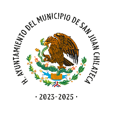

| Obra | Contrato de Obra | Actas de Entrega |
|---|---|---|
| REHABILITACION DE SANITARIOS ESCOLARES EN EL IEBO PLANTEL No. 9 | CO-01 FAISMUN MSJC 192 003 2023 | AEC-01 FAISMUN MSJC 192 003 2023 |
| AMPLIACIÓN DE LA RED DE DRENAJE SANITARIO EN LA CALLE LUCIERNAGAS | CO-02 FAISMUN MSJC 192 009 2023 | AEC-02 FAISMUN MSJC 192 009 2023 |
| CONSTRUCCIÓN DE POZO PARA AGUA POTABLE | CO-03 FAISMUN MSJC 192 001 2023 | AEC-03 FAISMUN MSJC 192 001 2023 |
| AMPLIACION DE LA RED DE AGUA POTABLE EN LA CALLE LIMON, PRIVADA DE CALLE LIMON Y SEGUNDA PRIVADA DE LUCIERNAGAS | CO-04 FAISMUN MSJC 192 013 2023 | AEC-04 FAISMUN MSJC 192 013 2023 |
| CONSTRUCCIÓN DE PAVIMENTO CON CONCRETO HIDRAULICO DE LA CALLE DE LOS SANTOS | CO-05 FAISMUN MSJC 192 010 2023 | ___ |
| Obra | Contrato de Obra | Actas de Entrega |
|---|---|---|
| CONTRATO DE OBRA PÚBLICA A PRECIOS UNITARIOS Y TIEMPO DETERMINADO | CO-01 FAISMUN MSJC 192 001 2024 | AER-01 FASIMUN MSJC 192 001 2024 |
| REHABILITACIÓN DE LA REPRESA PARAJE LAS PIEDRAS BLANCAS | CO-03 FAISMUN MSC 192 0003 2024 | AER-03 FASIMUN MSJC 192 003 2024 |
| AMPLIACIÓN DE LA RED DE AGUA POTABLE ARROYO DEL HIGO Y PRIVADA DE AZUCENAS | CO-04 FAISMUN MSJC 192 0004 2024 | AER-04 FASIMUN MSJC 192 004 2024 |
| CONSTRUCCIÓN DE PAVIMENTO CON CONCRETO HIDRÁULICO EN PRIVADA DE LUCIÉRNAGAS | CO-05-FAISMUN-MSJC-192-005-2024 | AER-05 FASIMUN MSJC 192 005 2024 |
| REHABILITACIÓN Y MANTENIMIENTO DE LA CASA DE LA CULTURA, GALERA | CO-06-FAISMUN-MSJC-192-006-2024 | AER-06 FASIMUN MSJC 192 006 2024 |
| Obra | Contrato de Obra | Actas de Entrega |
|---|---|---|
| REHABILITACIÓN DE TRANSFORMADOR TRIFASICO Y PUESTA EN OPERACIÓN DE BOMBA DE AGUA PARA POZO PROFUNDO | COP-MSJCH-192-FORTMUN-DF-001-2025 | ER-COP-MSJCH-192-FORTMUN-DF-001-2025 |
| REHABILITACIÓN DE TRANSFORMADOR TRIFASICO EN EL IEBO 09 SAN JUAN CHLATECA | COP-MSJCH-192-FORTMUN-DF-002-2025 | ER-COP-MSJCH-192-FORTMUN-DF-002-2025 |
| REHABILITACION DEL COLECTOR DE CAPTACION DE AGUA PLUVIAL PARAJE "EL GUAYABALITO" | CO-01-FAISMUN-MSJC-192-001-2025 | AEC-01 FAISMUN MSJC 192 009 2025 |
| CONSTRUCCIÓN DE LA OBRA INFILTRACIÓN PARA RECARGA ARTIFICIAL DE MANTOS ACUÍFEROS EN EL PARAJE "LA PILITA" |
CO-02-FAISMUN-MSJCH-192-002-2025
CM-02-CO-02-FAISMUN-MSJC-192-002-2025 |
AEC-02 FAISMUN MSJC 192 009 2025 |
| CONSTRUCCION DE PAVIMENTO CON CONCRETO HIDRAULICO EN LA CALLE FRANCISCO MARTINEZ MOTA | CO-03-FAISMUN-MSJC-192-003-2025 | AEC-03 FAISMUN MSJC 192 009 2025 |
| AMPLIACIÓN DE LA RED DE DISTRIBUCIÓN DE AGUA POTABLE EN LAS CALLES DE LA LOMA, OAXACA Y SANTA LUCIA | CO-04-FAISMUN-MSJC-192-004-2025 | AER-04-FAISMUN-MSJC-192-004-2025 |